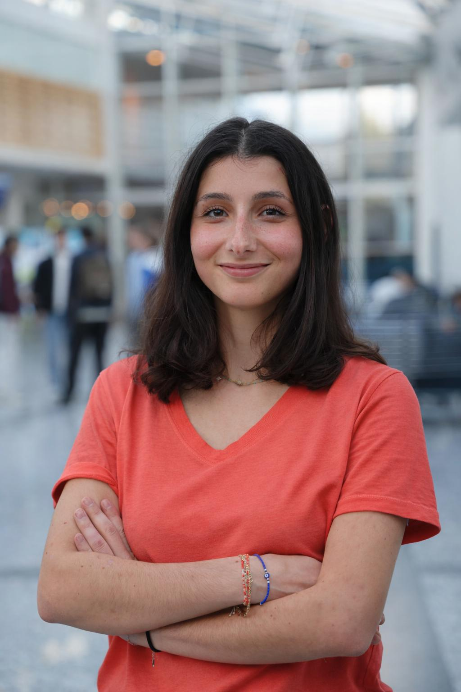
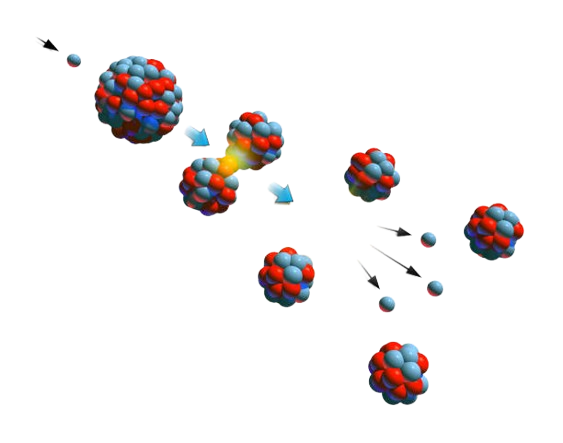
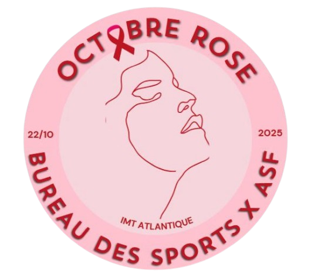
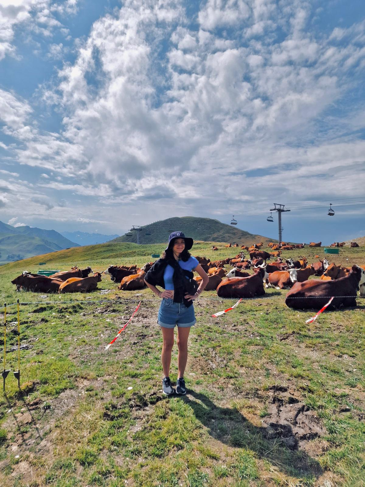
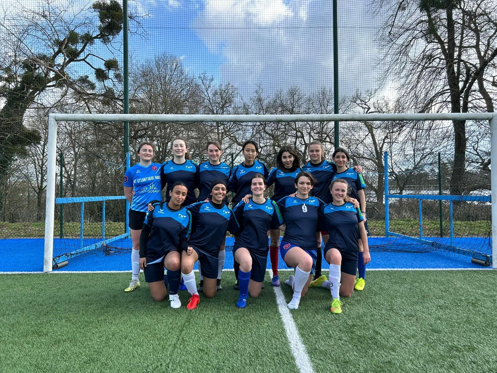

Eva Samoun
 Un CV tient sur une page. Un parcours, beaucoup moins. Ce site est donc né de ce constat : certaines expériences et certains choix méritent un peu plus d’espace que ce que peut afficher mon CV. Ici, je prends le temps de présenter mon parcours, mes projets académiques et professionnels, ainsi que ce qui m’anime, dans un cadre plus informel et plus personnel. Je suis actuellement étudiante en deuxième année à l’IMT Atlantique, sur le campus de Nantes. Depuis mon entrée dans l’enseignement supérieur, je m’intéresse aux questions liées à l’énergie et, plus largement, aux sciences physiques. Cet intérêt m’a conduite à me spécialiser dans le domaine de l’énergie nucléaire, que je considère comme un enjeu majeur et comme une solution pour l'énergie de demain.
Pour une lecture plus rapide et formelle, je vous laisse consulter mon CV .

Depuis mes années de classe préparatoire, les sciences physiques occupent une place centrale dans mon parcours. J’ai rapidement été séduite par cette manière cartésienne de comprendre le monde : l’observer, le représenter par des schémas, le traduire en équations, puis tenter d’en résoudre les mécanismes.
Certains sujets m’ont particulièrement marquée, comme la modélisation des vagues à la surface de l’eau - un exemple simple en apparence, mais qui illustre parfaitement la capacité des équations à décrire des phénomènes complexes et élégants à la fois.
 Avant d’intégrer l’IMT Atlantique, le secteur de l’énergie nucléaire m’était relativement inconnu. La découverte de cette spécialité s’est faite progressivement, au fil des cours, et j'ai finalement adoré. C'est d'abord a richesse de la théorie, avec la physique nucléaire, ainsi que les enjeux scientifiques, techniques et sociétaux qu’elle soulève. Cette spécialisation s’inscrit aujourd’hui naturellement dans la continuité de mon intérêt pour les sciences physiques et leurs applications concrètes.
janvier - février 2026
Saint-Denis
Rattachée à la DQPI (Direction Qualité et Performance Industrielle), j’ai intégré le pôle CFSI (Counterfeit, Fraudulent and Suspect Items), en charge de l’identification et du suivi de composants et matériaux potentiellement non conformes (produits contrefaits, non authentiques ou présentant des incertitudes sur leur origine ou leur qualité).
Dans ce cadre, j’ai mené des missions à dominante technique, impliquant l’analyse de dossiers, l’étude de documentations techniques et réglementaires, ainsi que la synthèse d’informations issues de différentes sources. J’ai notamment contribué à l’élaboration du retour d’expérience (REX) 2025 du pôle, en réalisant le bilan des dossiers traités, en cours et clôturés sur l’année.
Cette expérience m’a permis de mieux appréhender les exigences industrielles et d’explorer plusieurs aspects de la production et de la chaîne d’approvisionnement.
juillet 2025
Le Plessis-Robinson
Stage au sein du service Packaging et Simulations, avec des missions orientées qualité et tests de composants électroniques. J’ai assuré la vérification de la conformité de cartes électroniques (PCB) en sortie de production, en m’appuyant sur l’analyse de données techniques et l’utilisation de la base de données Matrix PLM.
J’ai également réalisé des essais en conditions contraignantes (tests sous étuve, résistance à la pression pour simuler de hautes altitudes, cycles thermiques) et contribué au développement d’une méthodologie de vérification qualité.
septembre 2024-maintenant
Nantes, Paris
Cours particuliers pour des élèves de collège et lycée, en mathématiques ainsi qu’en 1er année de classe préparatoire en chimie.
juillet 2021 - août 2025
Alpes françaises
Suite à l’obtention de mon diplôme du BAFA, j’ai animé des groupes de jeune en colonie de vacances, lors de séjours de montagne à thématiques sportives, via divers organismes (dont UCPA).
2024-2025
Nantes
Participation à la gestion de la vie culturelle et artistique du campus. En collaboration avec l’équipe, j’ai contribué à l’organisation de cabarets mettant en scène des artistes amateurs de l’école.
2024-2025
Nantes
 Engagée au sein de l’association humanitaire de l’école, j’ai été responsable de la communication des événements sur les réseaux sociaux. En lien avec l’ensemble du bureau, j’ai participé à l’organisation de collectes alimentaires, d’un événement de sensibilisation et de levée de fonds dans le cadre d’Octobre Rose, ainsi que de collectes au profit d’associations caritatives locales.
2025
IMT Atlantique, Nantes
 Projet mené à l’interface entre ingénierie et milieu hospitalier, en collaboration avec une équipe de huit étudiants. À partir d’un besoin exprimé par les chirurgiens du CHU de Nantes, nous avons conçu et développé une application web de bout en bout, destinée à structurer les consultations à chaque étape du parcours patient, avant et après l’intervention chirurgicale.
Projet mené à l’interface entre ingénierie et milieu hospitalier, en collaboration avec une équipe de huit étudiants. À partir d’un besoin exprimé par les chirurgiens du CHU de Nantes, nous avons conçu et développé une application web de bout en bout, destinée à structurer les consultations à chaque étape du parcours patient, avant et après l’intervention chirurgicale.
2025
IMT Atlantique, Nantes
Développement d’un programme permettant, à partir de photographies d’un objet, de reconstruire sa représentation tridimensionnelle sur une interface, selon un principe proche de la vision stéréoscopique.
2023-2024
Lycée Michelet, Vances
Projet réalisé en binôme autour du thème « jeu et sport ». Conception d’un déodorant respectueux de la santé du sportif et aux propriétés olfactives agréables. Le projet a couvert l’ensemble des étapes, de la synthèse du composé organique d’intérêt et de l’huile essentielle de limonène à la formulation finale, en s’appuyant sur des plans d’expériences et différentes méthodes de chimie organique et générale.
septembre 2024- septembre 2027
Nantes
Cours autour des thématiques énergétiques :
2021-2024
Paris 13e, Vanves
Lycée Michelet, Vanves
Lycée Pierre-Gilles de Gennes
 Voyager est pour moi une manière d’apprendre autrement. Que ce soit à travers la découverte de capitales européennes ou de destinations plus lointaines, chaque déplacement est l’occasion d’observer de nouveaux styles architecturaux, de goûter à des spécialités locales et de s’immerger dans d’autres cultures, parfois même à travers une langue différente. J’apprécie tout autant explorer la France, entre montagne et campagne, à la recherche de nouveaux paysages.
 Membre de l’équipe féminine de football de l’IMT Atlantique depuis septembre 2024, je participe à des rencontres à l’échelle départementale ainsi qu’à différentes compétitions universitaires. J’ai notamment pris part au tournoi du Cartel organisé par Mines Paris en mai 2024, une expérience marquante mêlant esprit d’équipe et engagement sportif.
Grande amatrice de cinéma, j’aime découvrir des films aux univers variés, capables de surprendre, d’interroger ou simplement de faire voyager le temps d’une séance.